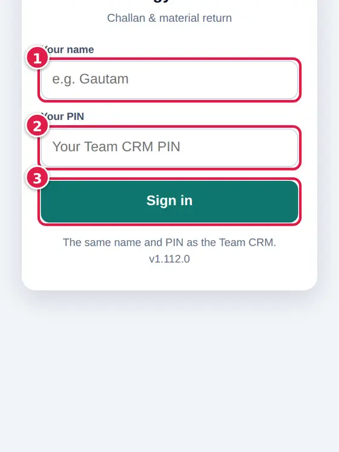
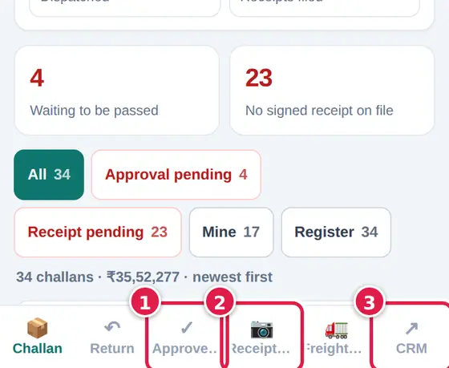
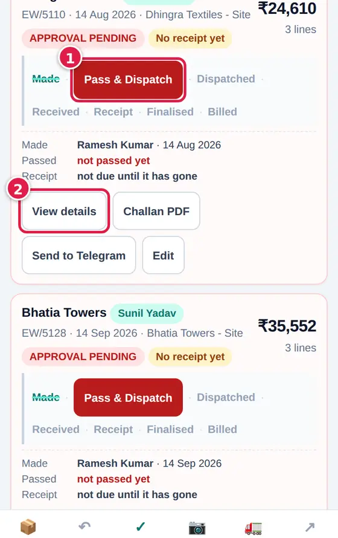
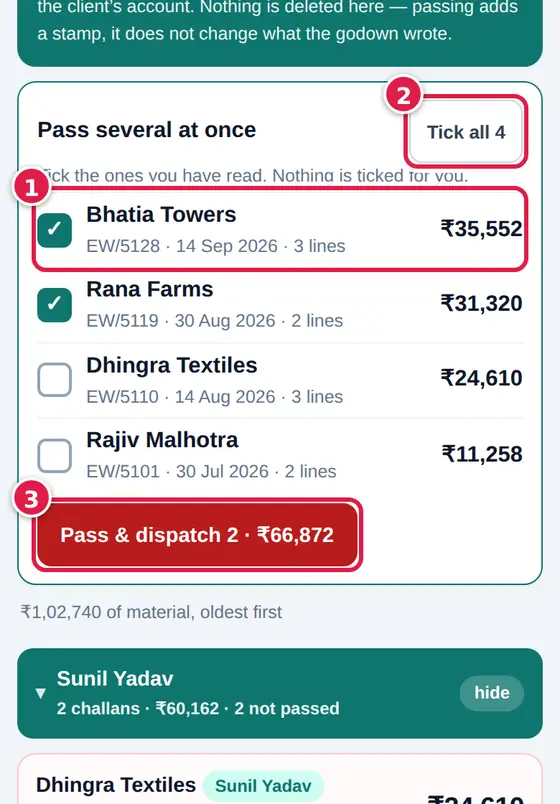

Nothing is ever deleted. A wrong challan is cancelled, and the record stays.
No signal? Save anyway. The phone keeps it and sends it when the line is back.
No signed paper, no delivery. Always bring the receipt back and attach it the same day.
Start here
Signing in and the bottom bar
Who: The godown, accounts and the owner.
The same name and PIN as the CRM. The bar at the bottom holds the screens: Challan, Return, Approve, Receipts, Freight - and for the owner Check & add and Scorecard.
Sign in
Type your name and your PIN, then tap Sign in.

Move between screens
Tap a screen in the bottom bar. A number on it is how many are waiting there. The last one, CRM, opens the CRM.

↻ pulls the latest book. ☰ shows who is signed in, Face ID / fingerprint and Sign out. ? opens this guide at the screen you are on.
Who: Accounts and the owner. The godown does not pass challans.
Godown, a mistake? Before dispatch, open the challan and tap Edit or Cancel challan and pick a reason - nothing is deleted, the owner can bring it back. After dispatch, tap Ask to cancel: the owner reviews it in the CRM and decides.
Only a passed challan counts against the client's account. Passing adds a stamp - it does not change what the godown wrote.
Pass one
Open Approve. Read the challan (View details, Challan PDF), then tap Pass & Dispatch and type your PIN.

Pass several at once
Tick the ones you have read (nothing is ticked for you), or Tick all 4. Then tap Pass & dispatch at the bottom of the ticked list.

Your PIN is asked once; until you close the app, the next one is one tap. Never type someone else's PIN.
Open the signed paper, check it against the challan, and add the delivery to the customer's hisab. The list shows what is waiting for your eye; the rest will come once their paper is in.